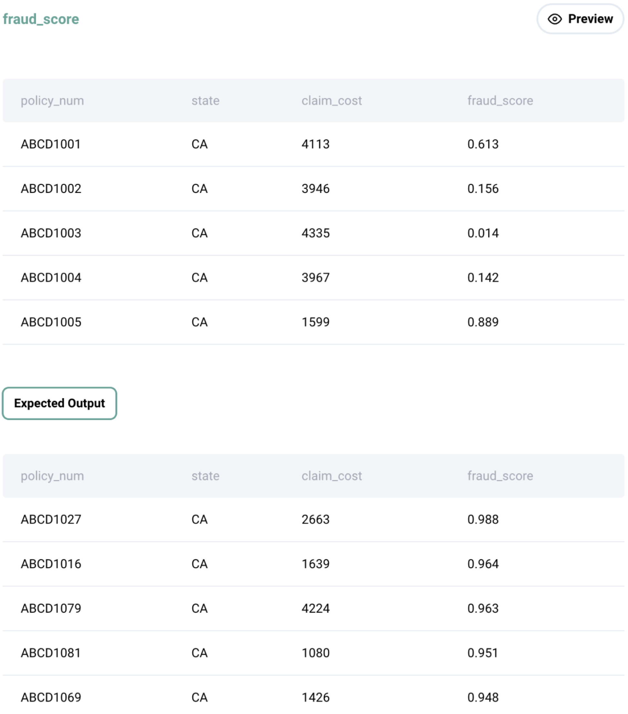

Question sourced from StrataScratch.com.
Database: MySQL
ABC Corp is a mid-sized insurer in the US and in the recent past their fraudulent claims have increased significantly for their personal auto insurance portfolio. They have developed a ML based predictive model to identify propensity of fraudulent claims. Now, they assign highly experienced claim adjusters for top 5 percentile of claims identified by the model.
Your objective is to identify the top 5 percentile of claims from each state. Your output should be policy number, state, claim cost, and fraud score.

/*
My strategy: For each state, use the PERCENT_RANK() window
function to find the percentile of each fraud score. Wrap this
result in a CTE, then filter the claims where the percentile is
greater than or equal to the 95th percentile (i.e. in the top 5
percentile) for that state.
*/
WITH ranked_claims AS (
SELECT *, PERCENT_RANK() OVER(
PARTITION BY state
ORDER BY fraud_score) AS percentile_rank
FROM fraud_score
)
SELECT policy_num, state, claim_cost, fraud_score
FROM ranked_claims
WHERE percentile_rank >= 0.95;